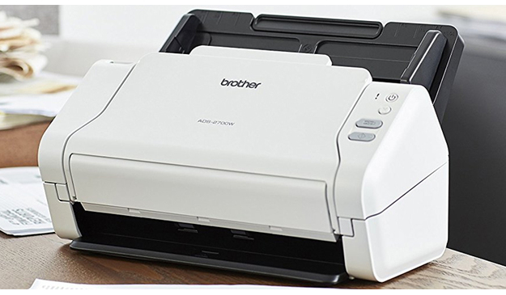
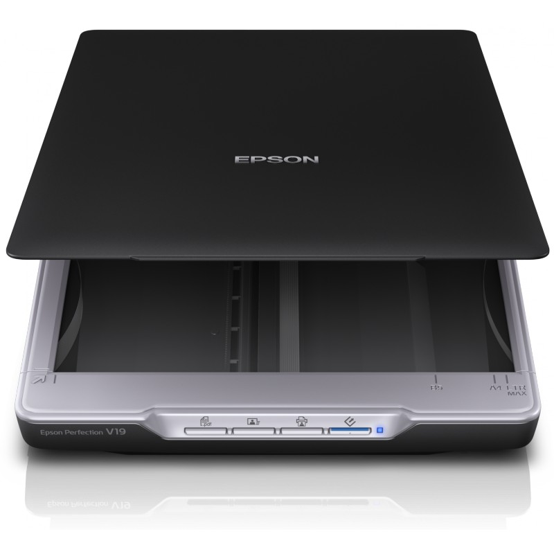
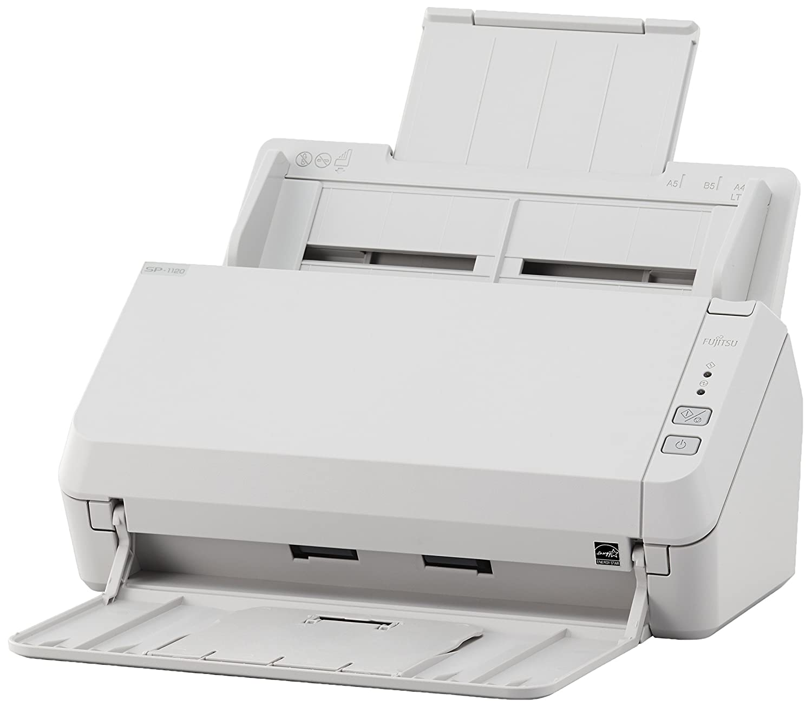
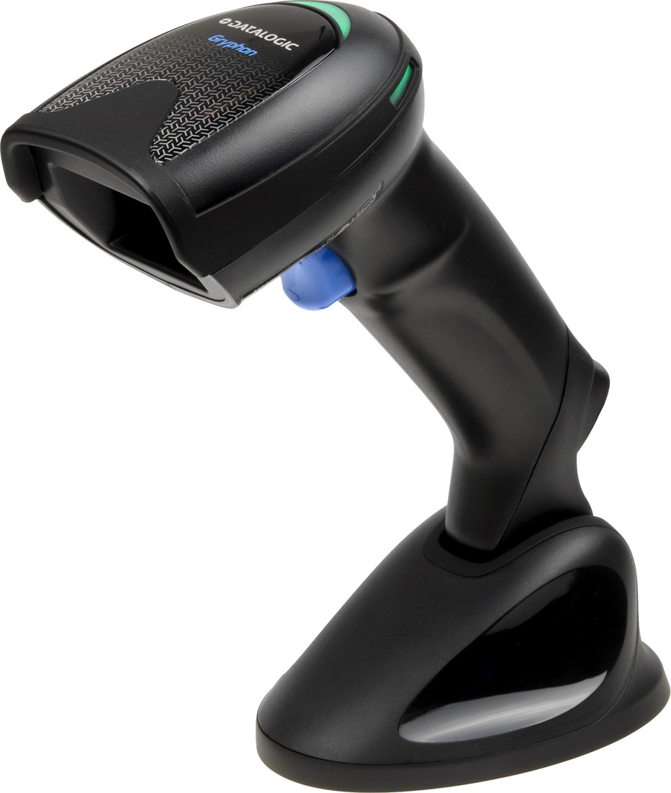

Prix : 1360 Dh TTC

 Shopping.com Nous Sommes Pour Vous
Shopping.com Nous Sommes Pour Vous
les Produits : les Scanners
¤ Un scanner , aussi appelé numériseur à balayage, est un périphérique informatique qui permet de numériser des documents ou autres, comme les empreintes digitales par exemple.
Scanner Epson Perfection V19

Description :
¤ Scanner à plat / Recto-verso manuelle.
¤ Résolution optique maximale:Jusqu'à (4800x4800) DPI(ppp).
¤ Profondeur: 48 bits.
¤ Taille maximale de numérisation:(216x297mm)(scanner à plat).
¤ Connectivité: 1 port USB 2.0
Fujitsu SP1130 Scanner

Prix : 3500,9 Dhs TTC
Description :
¤ Design compact.
¤ Modèle de vitesse de numérisation de 30 ppm.
¤ Prise en charge de la numérisation de cartes en plastique.
¤ Conception simple et facile à utiliser.
Datalogic Gryphon GD4520 2D Base black
Prix : 2277,1 Dhs TTC